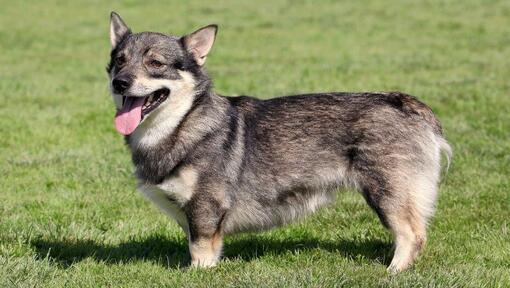
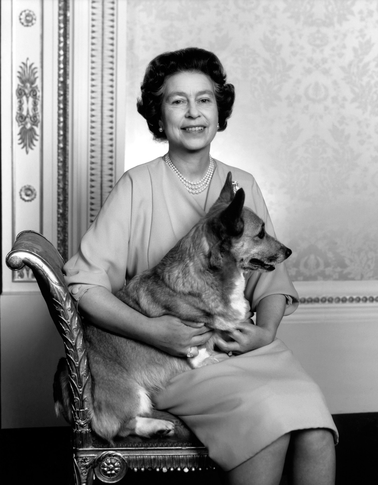

Waar komt de Corgi vandaan?
Net zoals de naam al aangeeft, zijn beide Corgi soorten afkomstig uit Wales. De Pembroke Corgi komt uit Pembrokeshire en de Cardigan Corgi is afkomstig uit Cardiganshire. Hoewel beide hondenrassen onder dezelfde naam genoemd worden, is het belangrijk om te weten dat ze afstammen van verschillende voorouders. De verschillende geschiedenissen zorgen ervoor dat de honden zowel qua innerlijk als qua uiterlijk enkele belangrijke verschillen hebben. De beide Corgi's hebben veel overeenkomsten met de Zweedse herdershonden of västgötaspets, zoals de typische korte poten. Vermoedelijk delen deze dieren dan ook een gemeenschappelijke geschiedenis, waarschijnlijk is de Zweedse västgötaspets zelfs een voorouder van de Corgi's. De Zweedse honden zouden dankzij de Vikingen Wales al 3000 jaar geleden bereikt hebben, waar de Corgi's ontstaan zijn.
Aangezien Corgi's een lange geschiedenis hebben in culturen waar mytische verhalen voorkomen, geloofden mensen dat Corgi's de favorite honden van elfjes waren. Ze werden door de elfjes gebruikt zoals tegenwoordig of als een soort paard om op te rijden.
De Corgi's is orgineel dus een herderhond. Hij werd vroeger vooral ingezet voor het hoeden van schapen, koeien en paarden. De Corgi is erg klein. Dit maakte het makkelijk voor de kleine honden om het grootte vee te ontwijken.
In 1925 kwamen de Corgi's voor het eerst terecht op hondententoonstellingen. De honden werden niet meer gebruikt om vee te houden, maar voor hun uiterlijke kenmerken. In eerste instantie leken beide rassen nog sterk op elkaar, waardoor ze vaak in dezelfde categorie werden geplaatst op de shows. Hierdoor ontstonden vaak ruzies, aangezien de eigenaars van beide hondenrassen niet vonden dat ze als hetzelfde ras gezien mochten worden. Na een aantal jaar werd besloten om de Pembroke Corgi en de Cardigan Corgi hun eigen plaats te geven op de tentoonstellingen.
Leuk weetje?
Corgi's zijn het favoriete hondenras van koningin Elizabeth II. De familie begon in 1933 met één Pembroke Welsh Corgi en inmiddels is de verzameling uitgegroeid tot meer dan 30 Corgi's en Corgi-kruisingen met teckels!
